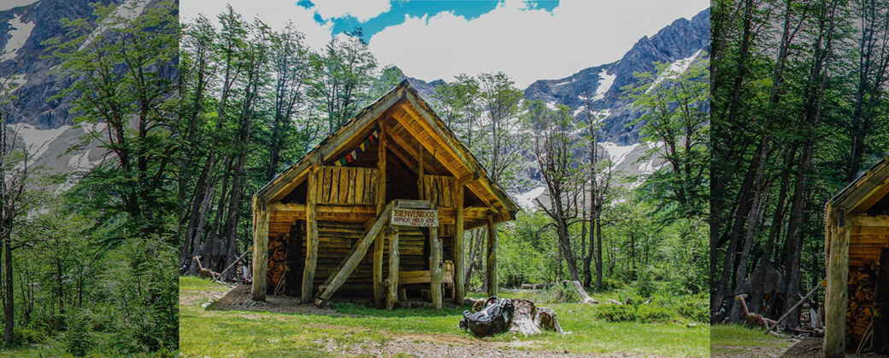

El Hielo Azul en El Bolsón es un área de trekking popular con un refugio de montaña y el glaciar Hielo Azul. El refugio, ubicado a 1350 metros de altura, pertenece al Club Andino Piltriquitrón. Se puede llegar a él a través de senderos que comienzan en el Camping Doña Rosa o desde el área de confluencia de los ríos Encanto Blanco y Azul.
El refugio Hielo Azul ofrece servicios como camping (con calentador), cena, comida rápida, y alojamiento con colchón (requiere llevar bolsa de dormir). Desde el refugio, es posible realizar el ascenso al glaciar Hielo Azul, un recorrido que implica subir rocas y pendientes, con un tramo de subida inicial fuerte y luego con grado de dificultad decreciente.
Para llegar al refugio y al glaciar, se recomienda llevar agua, ropa adecuada para el clima frío, y estar preparado para un camino que incluye pasarelas sobre ríos y tramos de subida empinada. El área también cuenta con otros senderos, como el que va al Cajón del Azul, que implica un descenso técnico y abrupto.